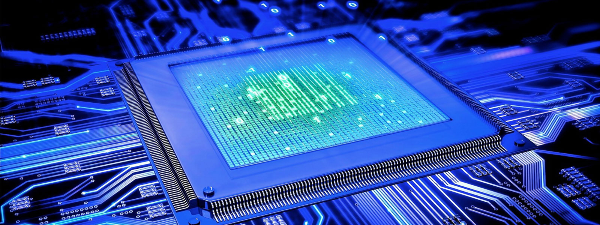
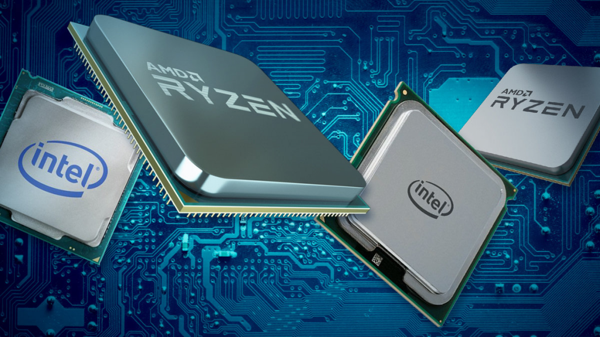

Центральный процессор — электронный блок либо интегральная схема, исполняющая машинные инструкции, главная часть аппаратного обеспечения компьютера или программируемого логического контроллера.
В настоящее время рынок между собой делят Intel и Amd.
Компания основана в 1968 году в Маунтин-Вью, Калифорния (Сайт производителя).
Компания основана в 1969 году в Саннивейл, Калифорния (Сайт производителя).
Электронный прибор/устройство, созданный из электронных компонентов (принцип действия которых основан на взаимодействии заряженных частиц с электромагнитными полями), используемых для преобразования электромагнитной энергии (например для передачи, обработки и хранения информации).
Микроэлектронное устройство — электронная схема произвольной сложности (кристалл), изготовленная на полупроводниковой подложке (пластине или плёнке) и помещённая в неразборный корпус или без такового в случае вхождения в состав микросборки.
Часто под интегральной схемой (ИС) понимают собственно кристалл или плёнку с электронной схемой, а под микросхемой (МС) — ИС, заключённую в корпус. В то же время выражение чип-компоненты означает «компоненты для поверхностного монтажа» (в отличие от компонентов для пайки в отверстия на плате).
Система команд (набор кодов операций) конкретной вычислительной машины, которая интерпретируется непосредственно процессором или микропрограммами этой вычислительной машины.
Электронные и механические части вычислительного устройства, входящие в состав системы или сети, исключая программное обеспечение и данные (информацию, которую вычислительная система хранит и обрабатывает). Аппаратное обеспечение включает: компьютеры и логические устройства, внешние устройства и диагностическую аппаратуру, энергетическое оборудование, батареи и аккумуляторы. К аппаратному обеспечению относятся устройства, образующие конфигурацию компьютера.
Цифровая электронная система, предназначенная для применения в производственной среде, которая использует программируемую память для внутреннего хранения ориентированных на потребителя инструкций по реализации таких специальных функций, как логика, установление последовательности, согласование по времени, счет и арифметические действия для контроля посредством цифрового или аналогового ввода/вывода данных различных видов машин или процессов.
Устройства, предназначенные для работы в системах реального времени.
Номер телефона: 89258310755
Адрес электронной почты: egor_trusov00@mail.ru